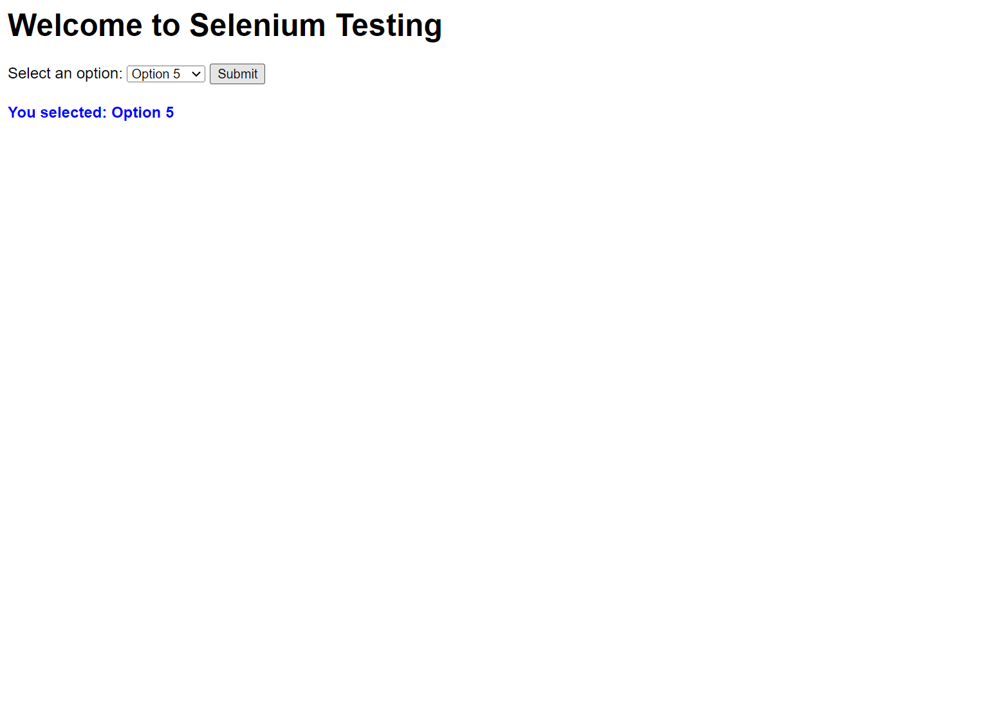

Selenium Test Report
All tests passed successfully!
- Implicit Wait: Configured globally for 10 seconds.
- Explicit Wait: Ensured dropdown is visible before interacting.
- Fluent Wait: Verified submit button is located before clicking.
- Select Class: Selected "Option 5" from the dropdown.
Confirmation Message: You selected: Option 5
